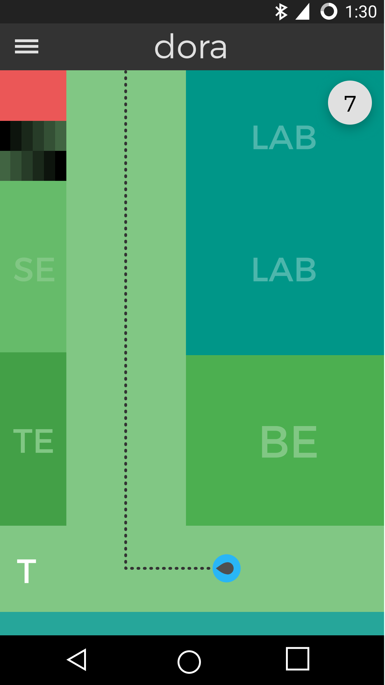

Hyperlocal Navigation
Because sometimes it's easier to get lost on the inside

18th July
Experimenting with mass produced 2.4GHz transmitters, to create a sub 5$ beacon.
Status: Success!
25th July
Looking at indoor wave propagation modelling software and researching basic machine learning algorithms.
1st Aug
Wire-framing and application design.